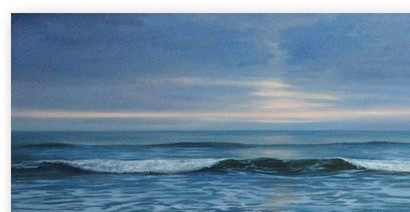
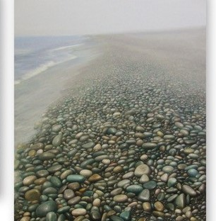
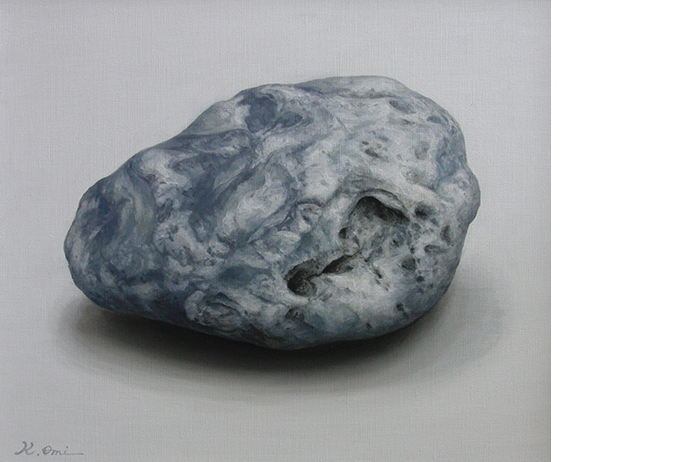
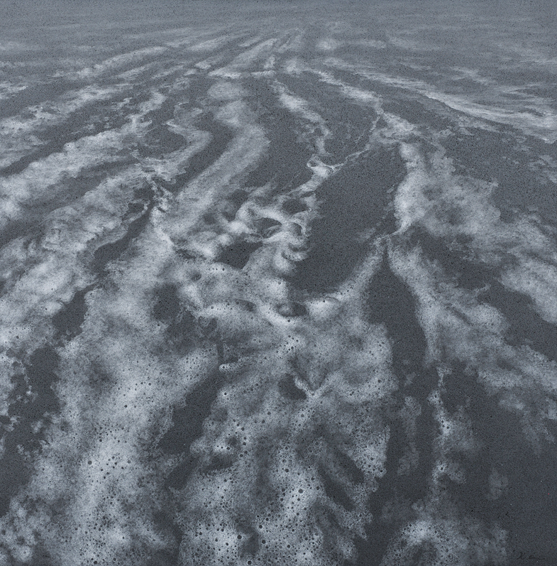
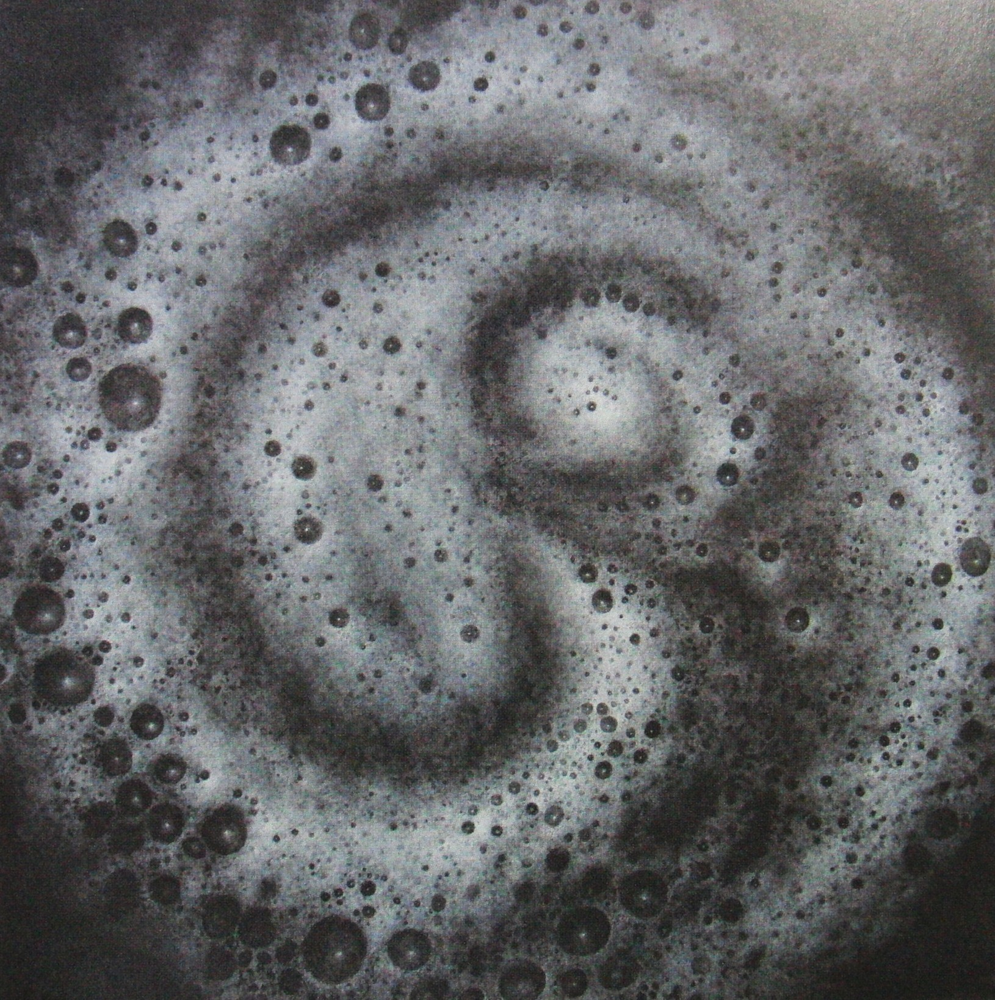
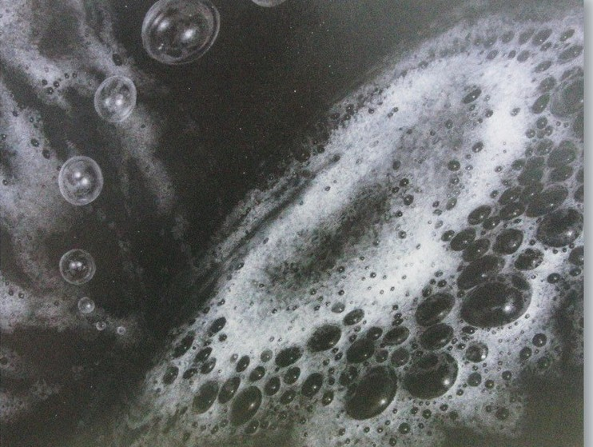
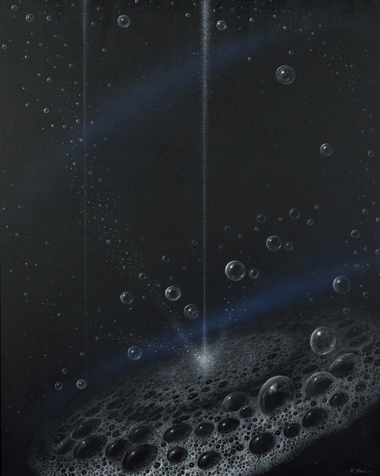

Works
作品Sea / Stone / Foam
海から、故郷の石へ、そして水面の泡へ。三つのモチーフを通じて、麻績勝広は自然の本質的な表情を描き続けています。
海Sea
画家としての出発点。約30年にわたり描き続けた、新潟の海。水平線のかなたに、光と時間の移ろいを見つめます。

海
1994 油彩・キャンバス
112.1 × 193.9 cm

海の小石
2004 油彩・キャンバス
193.9 × 130.3 cm 第81回春陽展
石・水石Stone
故郷・糸魚川、姫川流域の石。ひとつの石をまっすぐに見つめ、マットな絵肌でその沈黙の質感に迫ります。

石（ジャクレ）
2016 油彩・キャンバス
37.9 × 45.5 cm
泡Foam
近年の主題。水面に生まれては消える泡へ。やがて「海から宇宙へ」と、画面は静かに広がっていきます。制作年順に、その移ろいをたどってみてください。

泡
2015 油彩・キャンバス
130.3 × 130.3 cm（S60） 第92回春陽展

泡Ⅰ
2018 油彩・キャンバス
130.3 × 130.3 cm（S60） 第95回春陽展

流転
2021 油彩・キャンバス
72.7 × 90.9 cm 第7回雪梁舎・風の会展

泡沫（うたかた）
2024 油彩・キャンバス
130.3 × 162.0 cm（F100） 第101回春陽展
※ 掲載画像は、春陽会公式アーカイブ等の資料をもとにした暫定のものです（長辺〜800px）。順次、作家提供の正式な高解像度データに差し替えます。
ほかの「泡」シリーズ：《白い泡》2014（第91回春陽展）／《泡Ⅰ》2017（第94回春陽展）／《流転Ⅰ》2019（第96回春陽展）／《泡沫》2025（第102回春陽展）。